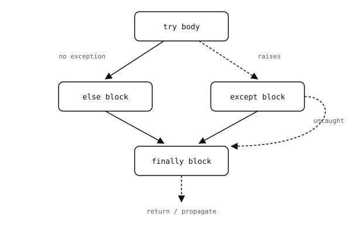

2.25. Hibák kezelése¶
A legtöbb futásidejű probléma a Pythonban kivételként jelenik meg – ez egy megnevezett, strukturált módja annak, hogy jelezni lehessen, valami elromlott. A ValueError, TypeError, KeyError, OSError, MemoryError mind példák erre; mindegyik egy osztály, és egy ilyen kiváltása leállítja az aktuális hívást, és kezelőt keres a környező kódban.
2.25.1. try / except¶
Csomagolj egy kódblokkot try blokkba, hogy elkapd a benne kiváltott kivételeket:
try:
n = int(input_text)
except ValueError:
n = 0
Ha az int(...) konverzió meghiúsul, a vezérlés az except blokkra ugrik ahelyett, hogy tovább terjesztené a hibát. Ha az input_text érvényes egész sztring volt, az except blokk kimarad.
Egyetlen try blokknak több except blokkja is lehet, mindegyik más-más típusú hibát elkapva:
try:
value = data[key]
except KeyError:
value = None
except TypeError:
value = -1
A Python sorrendben illeszt; az első, amelynek kivételosztálya megfelel, kezeli a problémát. Az Exception (szinte minden ősosztálya) elkapása bármilyen hibát kezel; ezt a program legkülső rétegére tartsd fenn, ahol az alternatíva egy összeomlás.
Figyelem
Egy üres except: (a kulcsszó után nincs osztály) elkapja a KeyboardInterrupt kivételt is – azt, amelyet az IDE küld, amikor a stop gombját megnyomod egy futó szkript megszakításához. Egy üres except: pass blokkba csomagolt ciklus elnyeli a megszakítást, és tovább fut, így a szkript leállítására nem marad más mód, mint a tápellátás ki- és bekapcsolása.
Részesítsd előnyben az except Exception: formát az üres except: helyett, amikor valóban széles körben kell elkapnod. A KeyboardInterrupt a BaseException osztályból öröklődik, nem az Exception osztályból, így az except Exception: működőképesen hagyja a stop gombot.
2.25.1.1. A kivétel megvizsgálása¶
A kivételhez csatolt üzenet kiolvasásához nevezd el az as kulcsszóval:
try:
f = open("data.txt")
except OSError as e:
print("could not open file:", e)
Az as által kötött változó csak az except blokkon belül érvényes.
2.25.2. else és finally¶
Egy try blokknak két opcionális kiegészítése van.
Az else csak akkor fut le, amikor a try kivétel kiváltása nélkül fejeződött be:
try:
value = compute()
except ValueError:
print("bad input")
else:
print("got", value)
Ha a „mit tegyünk, ha sikerült” részt az else blokkba teszed, a try blokk szűk marad – csak az a sor tartozik a try blokkba, amely meghiúsulhat.
A finally a végén minden esetben lefut – akár sikerült a try, akár kivételt váltott ki és az kezelve lett, akár kivételt váltott ki és az éppen továbbterjedni készül:
try:
do_work()
finally:
cleanup()

A finally mindig lefut. Az else csak a kivételmentes útvonalon fut le.¶
A legtöbb lefoglalás/felszabadítás mintához részesítsd előnyben a kontextuskezelőt egy try / finally párral szemben – maga az erőforrás kezeli a saját takarítását.
2.25.3. Gyakori beépített kivételek¶
Egy rövid lista azokról a kivételekről, amelyekkel gyakran fogsz találkozni:
ValueError– jó típus, rossz érték (bytes([300])– a 300 a jó típus, de a 0..255 érvényes byte-tartományon kívül esik).TypeError– teljesen rossz típus (len(42)).IndexError– a szekvencia végén túli index.AttributeError– egy nem létező attribútum elérése ("abc".foo).OSError– egy fájlrendszeri vagy I/O hiba.MemoryError– elfogyott a heap. Memóriában korlátozott futtatókörnyezeten ez normál működés közben is megtörténhet – nem csak patologikus esetekben.